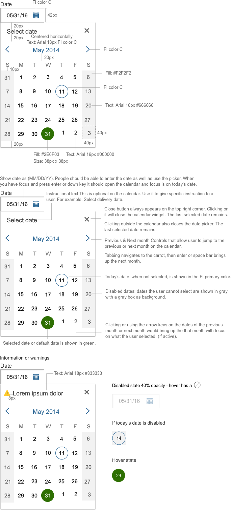

Date Picker
Visual Specifications
The calendar can open in any direction depending on the screen space. While the calendar is open, focus should be restricted within the calendar. Date select should occur with the use of the enter button or the spacebar.
The user can type in the date or use the calendar to select the date. They should be able to type in 08-22-16, or 08/22/16, or 08/22/2016. On blur, the format should automatically change to mm/dd/yy.
If they have chosen a language where the day is listed first, then the format should read dd/mm/yy.
If today’s date is selected, it should be green with the financial institution’s color as a line around the green.

Accessibility
- Indicate: Focus; the easiest way to achieve this is to not remove the default styling for the outline property.
- All images must have an alt attribute (even if the function of the image is purely decorative and alt=“”). When an image has meaning to a sighted user, convey this with the alt attribute if possible. Avoid images that contain text; if they do, the alt value must contain the same string of text.
- On close, return the focus to the element that activated the calendar.
- Close buttons: Images that function as a button (such as an image of an “X” to represent “Close”) include a text equivalent. If the text equivalent is hidden from view, it must remain available for assistive technology (e.g. using text-indent to move it off screen). If it’s an img element acting as a button, it also needs a ARIA role